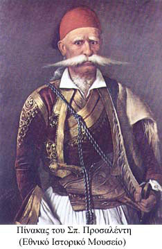

| Δυοβουνιώτης Ιωάννης (1757-1831)  Γεννήθηκε το 1757 στα Δύο Βουνά Φθιώτιδας (Οίτης) από όπου πήρε και το επώνυμο Δυοβουνιώτης, αντί του πατρικού του που ήταν Ξήκης. Ήταν αρματολός στην περιοχή της Λοκρίδας και μυήθηκε στη Φιλική Εταιρεία (1820). Με την έναρξη του Αγώνα απελευθέρωσε την Μενδενίτσα, τον Απρίλιο 1821. Είχε στενή σχέση με τον Αθανάσιο Διάκο, με τον οποίο συμμετείχαν σε κοινές μάχες. Το σχέδιό του για την αναχαίτιση της στρατιάς του Μπεϊράν πασά στη θέση Βασιλικά, στις 25 Αυγούστου 1821, με το οποίο αποδεκατίστηκε η τουρκική στρατιά και ανατράπηκαν τα σχέδια των Τούρκων για ενίσχυση της πολιορκίας της Τριπολιτσάς του έδωσε τον τιμητικό τίτλο του στρατηγού. Αναλυτική βιογραφία του αγωνιστή στο Διαδίκτυο |
||